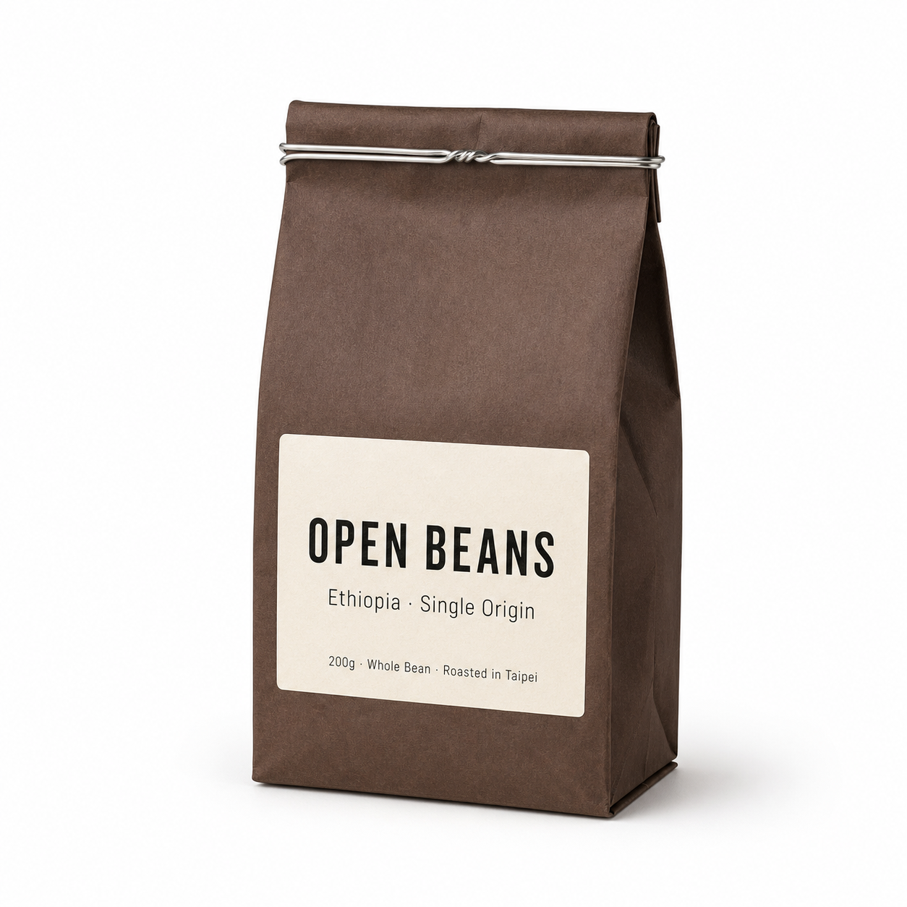

返回課程首頁
(B1)
純白底電商主圖
蝦皮、momo、PChome、Yahoo 商城上架的「商品主圖」。商品在純白底上、占畫面 60% 以上、沒有道具沒有場景沒有人物，目的是讓客戶「秒看清規格」。是電商賣家最高頻、最不能錯的素材，也是 imagegen 最容易一發到位的場景之一。
這張卡片你會學到
能判斷何時用純白底主圖（與 B2 生活方式、B3 影棚、B5 UI 疊加的差異）
能拆解模板的 6 段 prompt 結構並批次產出多 SKU 主圖
能識別 4 種常見踩雷（背景不純白／道具偷溜／陰影方向亂／字體拼錯）並修正
(01)
適用場景
這個模板用在哪
商品在純白背景（#FFFFFF）上、商品占畫面 60% 以上、無任何道具或場景、底部柔光陰影為主。目的不是「故事感」、是「規格清楚」——讓客戶滑到列表頁時能 0.5 秒看清這是什麼商品。電商平台的審核標準也偏好這種規格化主圖。
四個典型用途：
- 蝦皮／momo／PChome／Yahoo 商城上架主圖（最高頻、是平台審核必過的格式）
- 商品 SKU 卡 / 規格頁（同一商品不同顏色、容量、口味的並列展示）
- App 商品瞄點圖（外送平台、購物 App 的縮圖、要在小尺寸下也能辨識）
- 客戶 EDM／電子報的商品列表（白底背景跟信件背景無縫融合）
| 對比項 | 本卡片 · B1 純白底電商主圖 | 近似模板 |
|---|---|---|
| 背景 | 純白 #FFFFFF、無紋理 | B2 生活方式：真實場景；B3 影棚：氛圍背景；B5：純白 + UI 卡疊加 |
| 道具 | 嚴禁任何道具 | B2：3-5 個生活道具；B3：少量氛圍道具 |
| 人物 | 嚴禁人物出現 | B2：可有局部；B3：通常無；B4 包裝：可有手持 |
| 光線 | 正面柔光 + 兩側均勻補光、無方向性 | B2 自然側光；B3 戲劇光 |
| 商品占比 | 60% 以上（平台規範） | B2 30-50%；B3 40-70% 變動大 |
| 產出速度 | 最快（imagegen 1 發到位機率高） | B2 / B3 通常需 2-3 次微調 | |
一句話判斷：客戶問「能上架嗎」走 B1；問「能放 IG 嗎」走 B2；問「能當廣告嗎」走 B3；問「要在 banner 上加文字嗎」走 B5。**B1 是技術門檻最低、學員第一個應該掌握的模板**。
(02)
模板拆解｜6 段 prompt 結構
原模板把一張白底主圖拆成 6 段。比 B2 簡單——因為沒有「場景」「人物」「道具」這幾段，但多了「文字疊加」可選項：
| 段 | 段落 | 必問還是可預設 | 填什麼 |
|---|---|---|---|
| 1 | subject 商品 | 必問 | 商品名 + 關鍵視覺特徵（瓶型／材質／顏色／封口）+ 標籤文字（最好寫英文避免字體覆轍）+ 視角（正面 / 3/4 / 側 45°）+ 占畫面比例（建議 60-70%） |
| 2 | background 背景 | 固定寫死 | 純白 #FFFFFF、無紋理、無漸變、無顏色斑塊 |
| 3 | lighting 光線 | 可預設 | 正面柔光 + 兩側均勻補光、無方向性、商品色彩還原真實 |
| 4 | shadow 陰影 | 可預設 | 底部柔和落地陰影（淺灰、模糊）、不要硬陰影、不要懸浮無陰影 |
| 5 | text_overlay 文字疊加 | 選用 | 是否疊品牌名 / 賣點 / 價格 / 徽章。**強烈建議：中文一律後製、imagegen 只負責商品本身** |
| 6 | 限制 | 固定寫死 | 禁忌：道具、場景、人物、顏色斑塊、商品邊緣強描邊、強反射 |
記憶口訣：商品 → 白底 → 光 → 影 → 字 → 禁。1-4 段是必填，5 段選用，6 段固定。**新手最常漏「視角」與「占畫面比例」**——沒寫的話 AI 會給你的商品太小、平台會被退件。
(03)
台灣化範例 ①｜小工作室視角
小工作室 · 接客戶案
手沖咖啡品牌 OPEN BEANS 一次上架 5 個 SKU 到蝦皮
- 1 商品｜200g 牛皮紙咖啡豆袋、深棕底 + 米白標籤、英文標籤「OPEN BEANS · {產地} · Single Origin · 200g · Whole Bean」、頂部金屬鐵絲封口、正面視角、占畫面 65%
- 2 背景｜純白 #FFFFFF、無紋理、無漸變
- 3 光線｜正面柔光 + 兩側均勻補光、商品色彩飽和度真實
- 4 陰影｜底部柔和落地陰影（淺灰、模糊）
- 5 文字疊加｜不疊（標籤上的英文交給 imagegen 直出，蝦皮不需要 banner 文字）
- 6 限制｜禁道具、禁背景顏色斑塊、禁人物、禁強反射、商品邊緣不要描邊
為什麼這個情境成立：5 個 SKU = 同 prompt 結構、只動「產地」一個欄位（衣索比亞 → 瓜地馬拉 → 肯亞 → 巴西 → 哥倫比亞）= 5 張一致風格的主圖一個下午搞定，不必跑 5 次攝影棚。**這是 imagegen 對小工作室最大的價值點**：批次同款異樣。
(04)
台灣化範例 ②｜個人接案視角
個人接案 · 上架攝影代工
幫媽媽手作精油皂上架 momo / 蝦皮的全套白底主圖
- 1 商品｜80g 手作精油皂、長方塊狀、米色 + 草本綠色雙色設計、皂身正面壓印極簡英文「ROSE」「LAVENDER」等、無外包裝、正面 3/4 視角、占畫面 55%
- 2 背景｜純白 #FFFFFF、無紋理
- 3 光線｜正面柔光 + 頂部柔光、商品紋理（皂身的天然紋路、植物顆粒）要看得清楚
- 4 陰影｜底部極淺陰影（皂偏輕、不要重陰影顯得沉）
- 5 文字疊加｜不疊（中文品名留給後製、避免 imagegen 字體覆轍）
- 6 限制｜禁道具（不要花瓣、不要葉子、不要天然燕麥粒）、禁人物、禁手持、禁顏色背景
接案實務 tip：6 款 = 同 prompt 結構只動「款項名 + 主色」，跑完 6 張後再用 後製字體疊圖工作流 把中文品名疊上去（玫瑰 / 薰衣草 / 檸檬草⋯⋯）。整組 NT$3000 接案的成本可控制在 1 小時內、利潤率 80% 以上。客戶結案後留 1 張作品集樣品、之後接更多手作客戶。
(05)
示範圖｜可複製、可重現
下面這張圖是用範例 ① 的 6 段（OPEN BEANS 咖啡豆袋 200g · 衣索比亞）實際跑出來的成品。imagegen 88 秒一發到位、英文 logo 全部拼寫正確、純白底乾淨、底部柔光陰影到位。下方就是完整的 prompt——點「複製 prompt」、貼到 ChatGPT 或 Gemini，把【商品】段的「Ethiopia」換成「Guatemala」「Kenya」「Brazil」「Colombia」就是 5 個 SKU 一致風格的主圖：

完整 prompt · OPEN BEANS 咖啡豆袋白底主圖
請生成一張白底電商主圖（white-background product photography），可直接用於蝦皮、momo、PChome 等電商平台上架使用： 【商品】一袋牛皮紙咖啡豆袋（約 200g、一磅裝），深棕色牛皮紙袋身搭配米白色長方形標籤紙。標籤上以英文印著三層資訊：上方品牌名「OPEN BEANS」（無襯線粗體大字）、中間產地說明「Ethiopia · Single Origin」（細體中字）、下方規格「200g · Whole Bean · Roasted in Taipei」（細體小字）。豆袋頂部以金屬鐵絲封口、可見封口的金屬扭結。 【視角與構圖】商品正面 3/4 視角、置中、占畫面約 60%。商品為畫面絕對視覺焦點。 【背景】純白底（pure white #FFFFFF），完全乾淨、無紋理、無顏色斑塊、無漸變、無任何裝飾元素。 【光線】正面柔光 + 兩側均勻補光，無明顯方向性光源，商品色彩飽和度真實、不過度修飾。 【陰影】商品底部柔和落地陰影（淺灰、模糊、不過深），表現重量感但不搶戲。 【反射】無反射。 【風格】高解析度商業攝影風格、乾淨後期、台灣精品咖啡品牌的精緻包裝氣質。 【限制】嚴禁出現任何道具（咖啡豆、葉片、布料、木板、杯子等）；嚴禁背景出現灰邊、顏色塊、漸變或紋理；嚴禁商品邊緣強烈描邊；嚴禁強反射干擾商品本身；嚴禁人物出現；標籤上的英文字必須拼寫正確、字距整齊、可讀。
三個替換重點（同一份 prompt 改三處就變你的商品）：
- 把【商品】整段換成你的商品（包裝形態、顏色、英文標籤資訊）
- 視覺占畫面比例維持 60-70%（再低會被平台退件）
- 限制段保留「禁道具／禁背景斑塊／禁人物／禁強反射」四條鐵律
進階：給 GPT-image-2 / API 用的 JSON 結構版（直接傳給 OpenAI /images/generations）
{
"type": "白底電商主圖",
"goal": "可直接用於蝦皮 / momo / PChome 等電商平台主圖位的白底產品圖，商品作為絕對視覺中心",
"subject": {
"product_name": "200g 牛皮紙咖啡豆袋",
"visual_description": "深棕牛皮紙袋身、米白色長方形標籤、頂部金屬鐵絲封口",
"label_text": "OPEN BEANS · Ethiopia · Single Origin · 200g · Whole Bean · Roasted in Taipei",
"angle": "正面 3/4 視角",
"scale": "占畫面 60%"
},
"background": {
"type": "純白 #FFFFFF",
"shadow": "底部柔和落地陰影（淺灰、模糊）",
"reflection": "無"
},
"lighting": {
"key_light": "正面柔光",
"fill_light": "兩側均勻補光",
"color_accuracy": "真實還原"
},
"text_overlay": {"enabled": false},
"style": {
"rendering": "高解析度商業攝影 + 乾淨後期",
"consistency": "色彩、質感真實還原"
},
"constraints": {
"must_keep": ["純白底", "商品為唯一視覺中心", "標籤英文拼寫正確"],
"avoid": ["任何道具", "背景顏色斑塊或漸變", "強反射干擾商品", "商品邊緣強描邊", "人物出現"]
},
"output": {"aspect_ratio": "1:1"}
}
讀圖時看這 4 個點：(1) 背景是不是 100% 純白（沒有灰邊／漸變）？(2) 商品占畫面有沒有 ≥ 60%？(3) 陰影有沒有方向衝突？(4) 標籤文字（英文）拼寫對不對？這 4 點過了、就是平台可上架的合格主圖。
(06)
改成你的場景
把上面 6 段拿來，只動 3 個替換槽，就變成你自己的 prompt：
| 替換槽 | 你的版本 |
|---|---|
| ⓐ 商品＝？（包裝形態 + 主色 + 視角） | 例：80g 手作精油皂、米色＋草本綠雙色、3/4 視角 |
| ⓑ 標籤文字＝？（英文優先、避中文） | 例：「ROSE · Handmade · 80g」（中文品名後製） |
| ⓒ 占畫面比例＝？（建議 60-70%） | 例：占畫面 65%（小皂可拉到 55-60%） |
最常見的 4 種踩雷：
- 背景不是純白 你寫了「白底」但 AI 給你「灰白漸變」「米白底」「霧面白」——任何不是 #FFFFFF 的都會被蝦皮 momo 退件。解法：prompt 明確寫「pure white #FFFFFF、無紋理、無漸變、無顏色斑塊」三道鎖。
- 道具偷溜進來 白底主圖最忌諱出現「為了好看」AI 自動加進來的咖啡豆、葉片、布料、木板。解法：限制段重複寫「禁道具」3 次（你會發現 1 次的不夠）；如出現，改寫加上「商品是畫面唯一物件」。
- 陰影方向亂 商品底部陰影偏左、但商品本身亮部在右——光線跟陰影矛盾。解法：明確寫「正面柔光 + 兩側均勻補光、底部柔和落地陰影」、不要寫「45 度側光」（會讓陰影斜出畫面）。
- 中文 logo 字體別指望 prompt 解決 這個是 imagegen 的固有限制。模型對中文字體只會給「系統預設襯線體」（接近新細明體）——不管你寫「金萱體」「Maru Mincho」「禁用思源宋體」都沒用。
B1 的最佳策略：標籤一律寫英文（如本卡示範圖的「OPEN BEANS · Ethiopia · Single Origin」），imagegen 對英文拼寫穩定度高、可一發到位。中文品名留給後製疊上（→ 看 後製字體疊圖工作流附錄）。
對比 B2：B2 因為情境圖必須有商品標籤、無法全英文化，所以踩了 3 次中文字體覆轍；B1 全英文標籤一發到位，這就是「白底主圖比情境圖技術門檻低」的核心原因。
失敗案例｜prompt 動了哪一處會壞掉：
- 把 background.type 從「純白 #FFFFFF」改成「淺灰底」 → 平台直接退件（規格未達標）
- 把 subject.scale 從「占畫面 60%」改成「占畫面 30%」 → 商品太小、列表頁縮圖看不清楚
- 把 限制.avoid 移除「任何道具」 → AI 自動加咖啡豆／葉片進畫面、就不是純白底主圖了
- 把 label_text 改成「中文：開放豆 · 衣索比亞」 → 字體變新細明體系、沒有設計感、客戶要重做
- 把 shadow 從「底部柔光陰影」改成「強烈落地陰影」 → 商品看起來像「貼上去的」、不真實
交付提醒 本卡片的 imagegen 示範圖不是可直接給客戶的最終交付品。中文商業案一律先用 imagegen 出構圖（含英文佔位文字）、再走 後製字體疊圖工作流 在 Figma／Canva 疊上中文、最後校稿確認才交付給客戶。
本卡片改寫自 ConardLi／garden-skills 之
white-background-product.md 模板（MIT License、2026），已對中文進行台灣用語在地化、加入兩個本地接案情境（手沖咖啡品牌多 SKU 上架／主婦手作精油皂上架）與失敗案例，原始 JSON prompt 結構保留為教學參考。